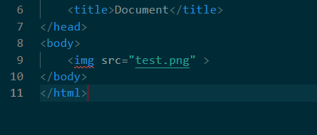
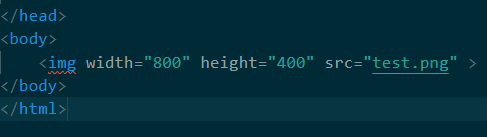
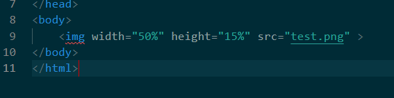

When clicking on a website, most people want to see the way something looks without needing to search it up.
So on this page, you'll learn a simple way to add photos for your website.
Before you start this lesson, make sure you already have a HTML file that you've created ready, like the file you would have created in Part 1. If you need help making this file, head to Part 1 to learn how to create a HTML file.
In order to go to Part 1, all you need to do is click Pt_1 on the top of the page, second on the nav bar.
This file should be set up, ready for code. If you need help setting the file up, head to Part 2 to set the file up.
In order to go to Part 2, all you need to do is click Pt_2 on the top of the page, third on the nav bar.
When you're working on your website, you'll need to know how to open it onto your web browser. If you need help opening your website in a web browser, head to Part 2.
Once you have finished, you may continue onwards.
First, make sure that you're writing within the space between 'body' and '/body'. Since this lesson is only about photos in particular, we'll only need to write in that space.
In your folder, you should get a image from either the web or from your own photographs. If you're getting an image from the web that you'll be using for a public website, please make sure that you don't use copyrighted images without permission, as this can lead to legal issues.
To place an image in your website, type img(Remember to type it inbetween < and >). The img code is self-closing, so it has no need for an extra closing tag. For extra understanding on this subject, you can head to Pt_2, third on the nav bar.
In order to tell the computer what image to showcase, you'll need to use the code src, which stands for source. The code should be written after img but within the self-closing tag, followed by a = sign and then the name of the image file in quotation marks. Be sure to use the file extension of that certain image, examples would be .jpg, .png or others.
Your code should look something like this.
When you test your code out, you might find the size of the image isn't the size that you would prefer. This problem can be easily fix with the width and height codes.
The width and height codes, which is written as width / height, should be written before the src code, followed by a = sign and then the width and height of the image in quotation marks.
Remember that the number you place for either width or height is the number of pixels you want the computer to use for that image. This means that you should start with a larger number rather then something like 3 pixels.
Your code should look something like this.
When changing the size of a tab, it's nice to have images that change to fit the size of the tab whenever possible.
By using percentages so that the image will always take that percentage of the website no matter what size, you'll be able to have images that change sizes for your website.
You can also use the link of a web image to place onto your website. The process is the same, just placing the URL for the image in the source code.
Remember that the URL should be to the image, not to another webpage where you got it from. In Google, you get the URL by right-clicking on the image you like, and then choosing 'Copy image address'.

Once you're done, you'll have a HTML website with photos, allowing others to visually see your subject.
To learn about how to add videos to your website, click on Pt_4, fifth on the CSS Nav Bar.